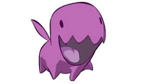
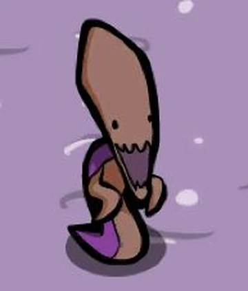
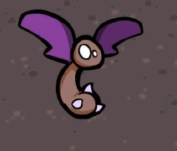
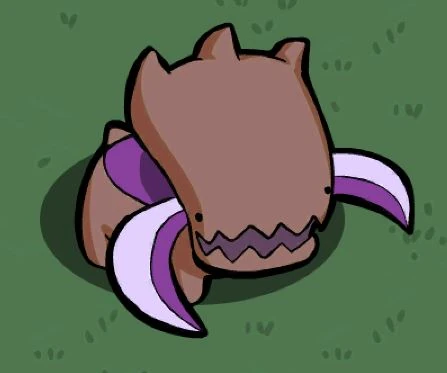

Los Zerg son una raza biológica capaz de evolucionar, adaptarse y consumir mundos enteros.

Unidad rápida especializada en ataques cuerpo a cuerpo.

Criatura de ataque a distancia con espinas letales.

Unidad aérea veloz y adaptable.

Bestia colosal especializada en romper líneas enemigas.